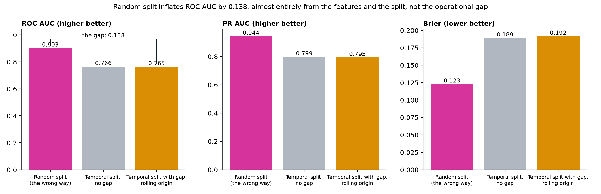
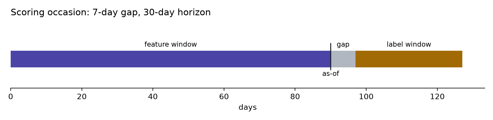

A controlled demonstration that the standard offline evaluation of a churn model overstates ROC AUC by 0.138 through silent temporal leakage, a worked protocol that measures the honest number, and a replication on a second, larger dataset.
Every figure above is read at build time from a
reports/results_*.json file that a notebook wrote. None is typed in.


Eight notebooks, grouped by the question they answer. Code is folded by default on every page, so the argument and the charts lead.
Naive baseline and leakage
Pin down what is being predicted and over what windows. Then build the model the way most tutorials do, and take its number apart feature by feature with adversarial validation and ablation.
Temporal splits and the gap
Rebuild it honestly: features computed strictly before each scoring date, an explicit gap, a rolling-origin backtest. Then measure the distance between the two numbers and ask whether the naive model could be served at all.
Calibration and time to event
A ranking metric does not say whether the probabilities can carry a retention decision. Calibrate on a later slice, derive the threshold from stated costs, and check what a hazard model adds once 'when' matters as well as 'whether'.
Replicating on KKBox
Run the same protocol on contractual subscription churn at a much larger scale. Report what replicated, what shrank, and the two things that did not transfer.
The skills the work exercises, each linked to where it is done.
src package (13 test
modules), a locked uv environment, 16 decision records, and DuckDB
for the larger panel. Notebooks narrate, the package implements.
Decision records →The parts worth taking away even if you never run the code.
Take a churn dataset with real event timestamps. Build a model the way most tutorials do: random train/test split, features computed over the full history. Report AUC. Then rebuild the same model with a temporal split, an explicit gap between the feature as-of date and the label window, and a rolling-origin backtest.
The difference between those two numbers is not a modelling improvement. It is a measurement of how much the first number was lying.
| Evaluation | ROC AUC | PR AUC | Brier |
|---|---|---|---|
| Random split (the wrong way) | 0.903 | 0.944 | 0.123 |
| Temporal split, no gap | 0.766 | 0.799 | 0.189 |
| Temporal split with gap, rolling origin | 0.765 | 0.795 | 0.192 |
The gap between the first row and the last is 0.138 ROC AUC, the size of the lie. PR AUC falls by a comparable 0.149 and Brier gets 56% worse in relative terms, so this isn't a ranking-metric artifact.
Most of that gap closes as soon as the features and the split are fixed.
Adding the operational gap back in costs nothing further here, but that
ablation is narrower than it looks, because this project's gap_days moves
the label window's boundary and never the feature cutoff, so it could not
have detected a gap effect on feature leakage even if one existed (see
notebooks/04_the_gap.py).
An interesting finding is that 01's reported number isn't just inflated, it
isn't servable. Its features are measured to the dataset's own end date
regardless of scoring date, so at scoring time they encode information that
doesn't exist yet. Fed the features an actual deployment would have, the
same trained model isn't obviously better than the correctly-trained one
(see 04's A/B/C comparison and
ADR-0010). A random
split doesn't just report an inflated average, it reports a number for a
model that has no honest feature set to be served with.
Yes, on contractual subscription churn at about 25x the row count, with a
different eligibility rule, feature set and label (notebooks/07_generalisation.py):
| KKBox evaluation | ROC AUC | PR AUC | Brier |
|---|---|---|---|
| Naive (full-history features, random split) | 0.934 | 0.939 | 0.102 |
| Corrected (as-of features, gap, rolling origin) | 0.907 | 0.909 | 0.122 |
The KKBox figures are a snapshot of one local run. They move by up to ~0.001 between runs on identical inputs, where the Online Retail II figures above reproduce exactly. Read them as sizes, not exact values, and see
notebooks/07_generalisation.py's leakage audit, row 11, for the cause. The published notebooks are rendered from this same run.
The gap is real but far smaller: 0.026 against Online Retail II's 0.138.
The reason is measured rather than assumed. KKBox's corrected model already
scores 0.907, close to what a metric bounded at 1.0 allows, because
days_until_expiry is nearly a structural readout of the label so there
is little headroom for a leaky version of the same features to inflate
into. The size of the lie scales with how little genuine signal the
honest model has, not with the kind of churn.
Two things did not transfer.
Calibration on KKBox is won by the uncalibrated model, the opposite of
05's several-fold improvement on retail. And the gap ablation itself
doesn't port: on contractual data, changing the gap changes which customers
count as churners, so the two arms score differently-labelled panels
(07 measures this directly). No claim about gap contribution is made
across both datasets.
A model selected on an inflated offline metric is selected on the wrong criterion. Worse, a ranking metric says nothing about whether the predicted probabilities are usable for a retention decision, so this repo also covers calibration and the expected-value threshold that follows from it.
Two panels, chosen because they have real event timestamps:
Showing the same failure in both settings is what makes this a method rather than a case study. See ADR-0003 for why the popular Telco churn dataset cannot be used for this.
docs/checklist.md distils what the notebooks found
into eleven checks you can run against a churn dataset this repo has never
seen. It names the failure each check catches and what changes between a
small dataset and a large one, and it reads on its own without the rest of
the repo.
uv sync
uv run churnval fetch retail
.\make.ps1 nb
notebooks/: the argument, in order. Start at 00_problem_definition.src/churnval/: the implementation.docs/standards/: the engineering and validation rules this repo follows.docs/adr/: why things are the way they are.MIT for the code. The datasets are covered by their own terms and are not redistributed here. The fetch script downloads them from source.